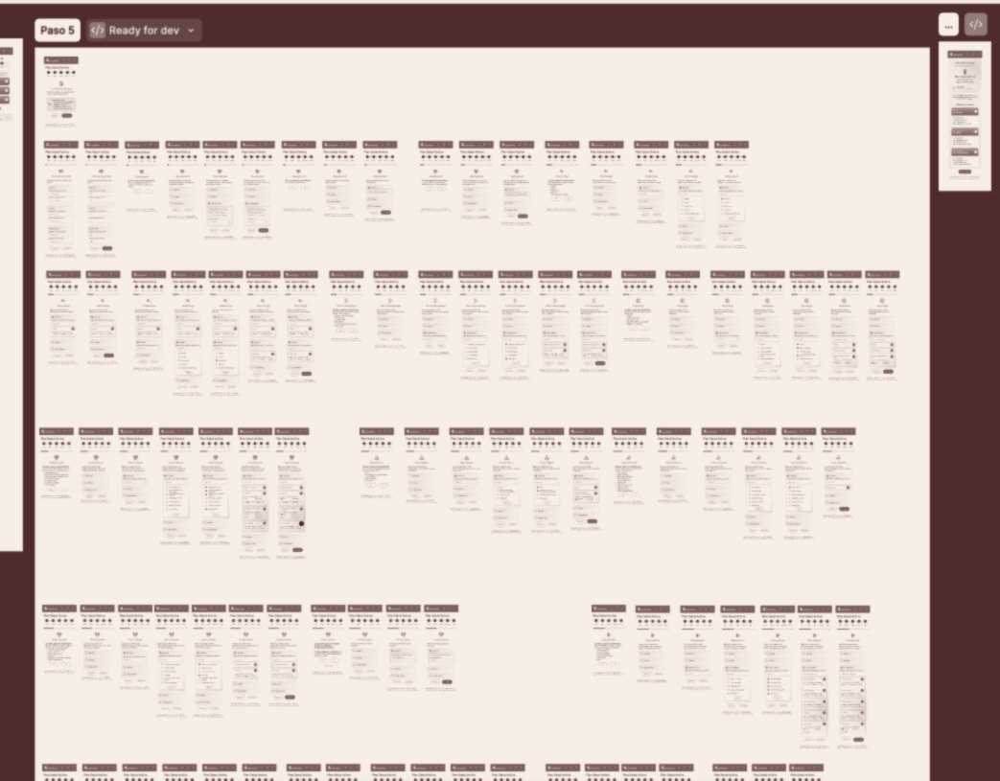
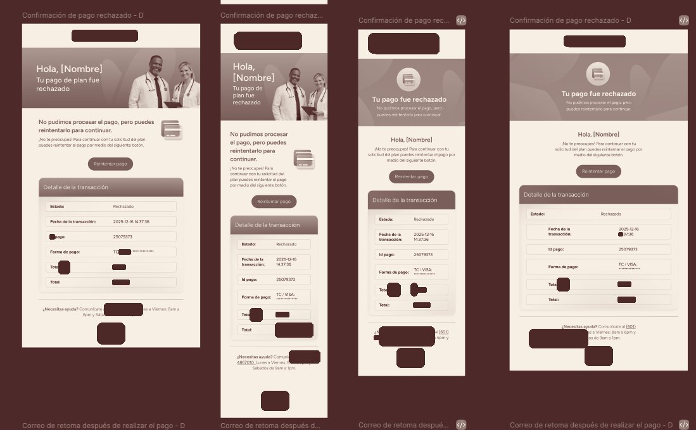

El mismo flujo, un formulario mucho más pesado
Después de que la venta digital pasó a desarrollo propio, este plan también tenía que adoptar el nuevo flujo. A diferencia de los dos primeros, exigía una declaración de salud: 31 preguntas condicionales sobre salud general, hábitos y especialidades como oftalmología, otorrinolaringología, neurología, cardiovascular y neumología.
Una póliza podía incluir hasta 20 personas, y antes cada una respondía el cuestionario completo por su cuenta. El costo crece con cada persona que agregas, que son justo las que el negocio más quiere afiliar.
Invertir la pregunta
Antes · por persona
“¿Jane ha estado hospitalizada en los últimos 3 meses?” “¿Joe?” “¿Joe Senior?”, repetido en cada pregunta y por cada persona.
Después · por pregunta
“¿El titular o alguno de sus beneficiarios ha estado hospitalizado en los últimos 3 meses?” Sí → “Selecciona quiénes”. Quien no se selecciona es un No. Los detalles se piden solo para los sí.
El caso común (personas sanas) recibe el camino más corto: una respuesta cubre a toda la familia. El caso raro recibe exactamente las preguntas de seguimiento que necesita, asociadas a la persona correcta. Un No en una pregunta raíz cierra toda su rama.
También rediseñé cómo se verifica, acepta y edita el cuestionario: un resumen agrupado en acordeones por especialidad, con edición en línea, para que revisar las respuestas de veinte personas no signifique empezar de nuevo.

Más fácil de construir contra más fácil de terminar
La opción sobre la mesa era un scroll infinito con un cuestionario por persona, más simple de desarrollar. No dije que era feo. Argumenté con dos tipos de evidencia:
- Un benchmark de 35 páginas sobre cómo otras empresas manejan formularios extensos, sobre todo en móvil: indicadores de progreso comparados entre N26, Oscar y Stripe Atlas, y criterios explícitos de multipaso contra página única (más de 15 campos o datos complejos piden pasos; menos de 10 con usuarios expertos admiten una sola página).
- La aritmética de cuántas preguntas dejarían de responder a mano los usuarios con el modelo invertido.
El modelo invertido quedó como el modelo final.

Parte del flujo ocurre en el correo
Algunos pasos no ocurren en el producto: el código de verificación, un pago rechazado, el recordatorio para volver y terminar. El negocio me dio el contenido de los correos transaccionales y yo propuse el diseño, en variantes desktop y responsive, organizadas por estado del proceso. La ventana de 48 horas para retomar la definió el negocio después de validar la viabilidad técnica.

Un diseño, dos planes
Un plan hermano no alcanzó a tener prototipos propios por tiempo, pero los dos se parecen lo suficiente para que un solo desarrollo sirva a ambos, así que el impacto del modelo se extiende a los dos productos.
Cliente anónimo por confidencialidad. Las pantallas salen de mis archivos de Figma, sin marca, precios ni datos personales, y recoloreadas.